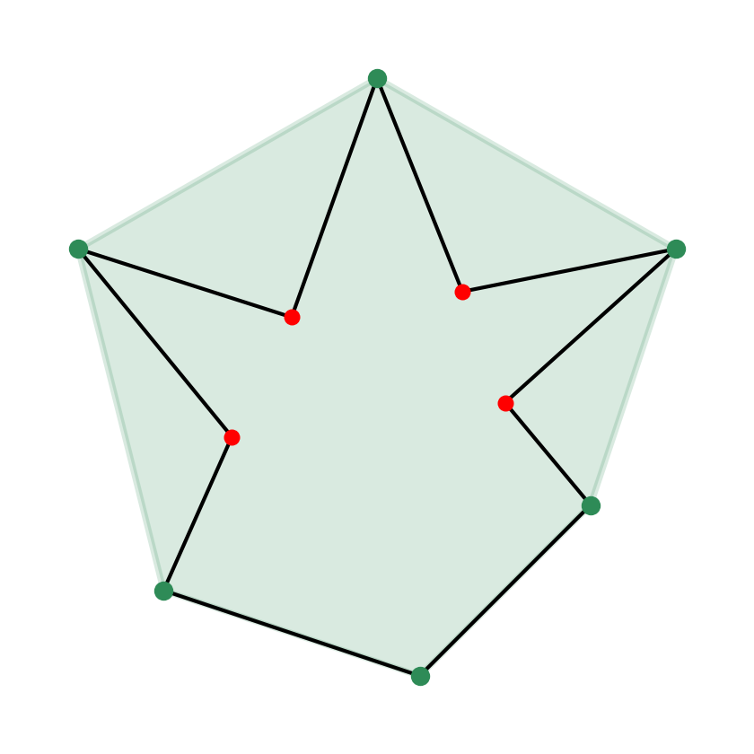
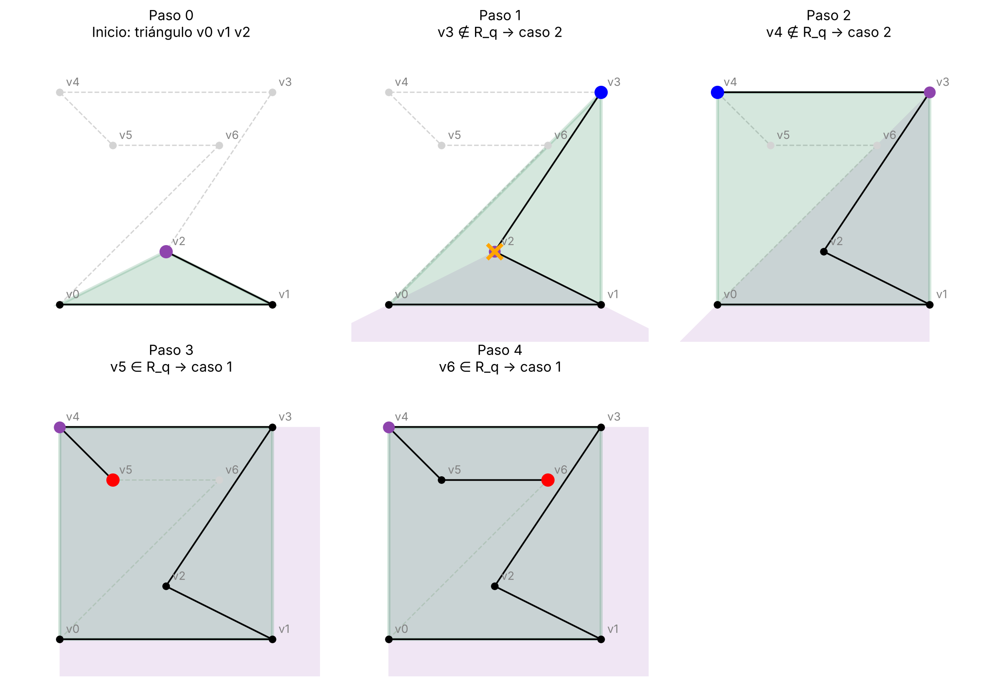
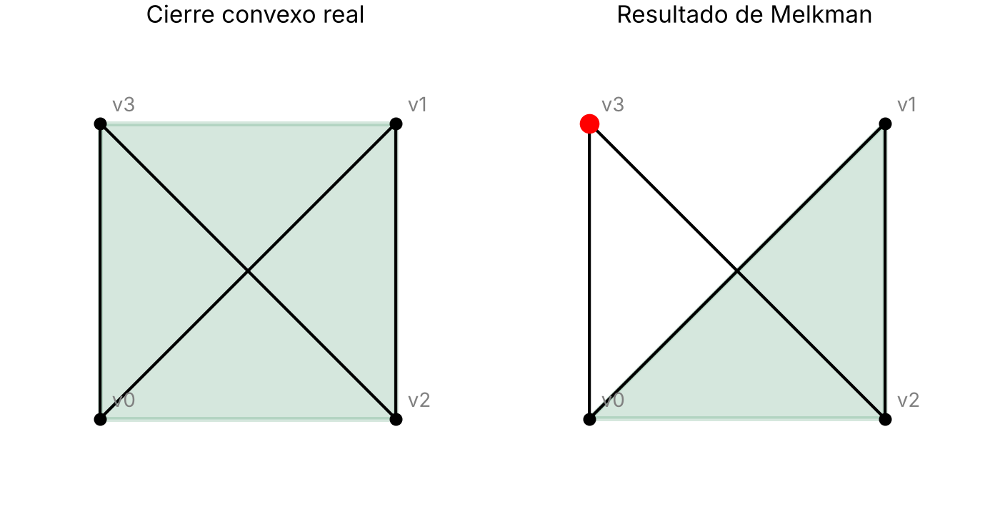

Introducción
¿Qué es el cierre convexo?
Un conjunto es convexo si, para cualquier par de puntos del conjunto, el segmento que los une queda entero dentro de él.
El cierre convexo (o envolvente convexa) de un polígono P, CH(P), es el menor conjunto convexo que contiene a P. Una forma intuitiva de imaginarlo: si los vértices del polígono fueran clavos en una tabla y los rodeáramos con una goma elástica, la forma que tomaría la goma al soltarla sería el cierre convexo.
La goma solo se apoya en vértices del polígono, así que el cierre convexo de un polígono coincide con el cierre convexo de sus vértices [2]. Los vértices que «se meten hacia dentro» (los vértices cóncavos) nunca forman parte de él.

¿Por qué un algoritmo específico para polígonos?
Para una nube de puntos cualquiera, los algoritmos clásicos como el de Graham necesitan O(n log n) operaciones, porque primero tienen que ordenar los puntos [2].
Pero los vértices de un polígono ya vienen ordenados: el propio polígono dice en qué orden se recorren. Aprovechando ese orden, el cierre convexo se puede calcular en tiempo lineal, O(n) [2], [10].
No basta con aplicar Graham sin ordenar: ese método solo mira tres vértices seguidos y falla cuando el polígono tiene bolsillos (zonas que quedan dentro del cierre pero fuera del polígono) [2]. El algoritmo de Melkman (1987) [1] resuelve este problema de la forma más sencilla conocida.
Idea del algoritmo
Melkman es una modificación del algoritmo incremental [2]: recorre los vértices del polígono en orden, uno a uno, y mantiene en todo momento el cierre convexo C de los vértices que ya ha visto.
Inicio. Con los tres primeros vértices se forma un triángulo, que siempre es convexo. Ese triángulo es el primer C.
Llamamos q al último vértice que se ha añadido a C, y ANTERIOR(q) y POSTERIOR(q) a sus dos vecinos en C [2].
Para cada nuevo vértice p se mira si está en la región R_q: la zona del plano que queda a la vez «por dentro» de las dos rectas de C que pasan por q (la que va de ANTERIOR(q) a q y la que va de q a POSTERIOR(q)). Como el polígono es simple y no puede cruzarse a sí mismo, un vértice que cae en R_q está escondido detrás de C y no puede formar parte del cierre.
Se distinguen dos casos:
Caso 1: p ∈ R_q. El vértice está dentro y se descarta. Se pasa al siguiente.
Caso 2: p ∉ R_q. El vértice está fuera de C y entra en el cierre. Desde p se buscan las dos rectas tangentes a C (una hacia atrás y otra hacia delante), se inserta p entre los dos puntos de tangencia y se borran los vértices de C que quedan entre ellos, porque han quedado dentro del nuevo cierre. A partir de ahí, p es el nuevo q.
Cuando se han procesado todos los vértices, C es el cierre convexo del polígono.
En el artículo original [1] y en [3], C se guarda en una cola doble (deque) con q en sus dos extremos: así los dos vecinos de q están siempre en las puntas de la cola y añadir o quitar vértices cuesta tiempo constante.
El test de orientación
Todas las decisiones del algoritmo se toman con una sola operación: el signo del área del triángulo formado por tres puntos p1, p2, p3 [2], [3]:
Δ(p1, p2, p3) = (x2 − x1)·(y3 − y1) − (x3 − x1)·(y2 − y1)
Δ > 0: al recorrer p1 → p2 → p3 se gira a la izquierda (sentido antihorario).
Δ < 0: se gira a la derecha (sentido horario).
Δ = 0: los tres puntos están alineados.
Si O es el signo del triángulo inicial (su orientación), la condición para que p esté en R_q es [2]:
O · Δ(q, POSTERIOR(q), p) ≥ 0
O · Δ(ANTERIOR(q), q, p) ≥ 0
Multiplicar por O hace que el algoritmo funcione igual si el polígono se recorre en sentido horario o antihorario.
Ejemplo paso a paso
Tomamos el polígono de vértices v0, …, v6, en este orden:
(0,0) → (4,0) → (2,1) → (4,4) → (0,4) → (1,3) → (3,3)
Paso 0, inicio: triángulo v0, v1, v2. C = {(0,0), (4,0), (2,1)}.
Paso 1, v3 = (4,4): caso 2. Está fuera de C. Al añadirlo, v2 = (2,1) queda dentro del nuevo cierre y se borra. C = {(0,0), (4,0), (4,4)}.
Paso 2, v4 = (0,4): caso 2. Está fuera de C y entra. No se borra nada. C = {(0,0), (4,0), (4,4), (0,4)}.
Paso 3, v5 = (1,3): caso 1. Cae en R_q (dentro del cuadrado) y se descarta.
Paso 4, v6 = (3,3): caso 1. También cae en R_q y se descarta.
Resultado: el cierre convexo es el cuadrado (0,0), (4,0), (4,4), (0,4). Los vértices v2, v5 y v6 quedan dentro.

Complejidad
Comprobar si un vértice está en R_q cuesta tiempo constante: son dos cálculos de Δ.
Buscar las tangentes puede recorrer varios vértices de C, pero cada vértice recorrido se borra, y cada vértice del polígono entra en C una sola vez y sale como mucho una vez [1], [3]. Por tanto:
T(n) = Σ (trabajo en cada vértice) = O(n)
Instrucciones
Nuestra applet calcula paso a paso el cierre convexo de un polígono simple con el algoritmo de Melkman. Para usarla:
- Pulsa "Lanzar applet interactiva ahora". El código se ejecuta en el servidor de SageMathCell, así que hace falta conexión a internet y puede tardar unos segunos en aparecer.
- Elige un polígono en el menú Polígono. HEmos desarollado cuatro ejemplos distintos, ordenados de más fácil a más difícil:
- Convexo: el cierre es el propio polígono.
- Estrella: los vértices interiores se descartan.
- Ciudad: muchos bolsillos pequeños entre edificios.
- Caracol: euna espiral, con muchos vértices dentro del cierre.
Applet
Discusión y aplicaciones reales
Comparación con los algoritmos vistos en clase
| Algoritmo | Coste | Idea |
|---|---|---|
| Para nubes de puntos (sirven también para polígonos) | ||
| Fuerza bruta | O(n⁴) / O(n³) | Eliminar puntos no extremos / buscar aristas extremas |
| Marcha de Jarvis | O(n·k), peor O(n²) | Envolver: desde un punto del cierre, buscar el siguiente (k = vértices del cierre) |
| Graham | O(n log n) | Ordenar por ángulo y recorrer con una pila, quitando giros a la derecha |
| Quickhull | Mejor O(n), peor O(n²) | Como QuickSort: dividir por la recta de dos extremos y descartar el interior |
| Incremental | O(n²) (O(n log n) si se ordena antes) | Añadir puntos uno a uno y rehacer el cierre con dos tangentes |
| Divide y vencerás | O(n log n) | Como MergeSort: dos mitades y unir con las tangentes superior e inferior |
| Específicos para polígonos | ||
| Graham sin ordenar | O(n) | Graham sin la ordenación; falla si hay bolsillos |
| Lee | O(n) | Graham + control de bolsillos; parte de x_min y x_max; 5 casos |
| Melkman | O(n) | Incremental aprovechando el orden; cualquier vértice inicial; 2 casos |
Todos los algoritmos se han visto en el Tema 2 [2]. Los del primer grupo trabajan con una nube de puntos cualquiera: se pueden usar con los vértices de un polígono, pero no aprovechan que vienen ordenados. Por eso los mejores (Graham y divide y vencerás) se quedan en O(n log n), el mínimo posible para nubes de puntos [10].
Los del segundo grupo sí aprovechan el orden de los vértices y bajan a O(n):
Graham sin ordenar [2] solo comprueba tres vértices seguidos, así que no detecta cuándo el polígono «vuelve» por dentro de un bolsillo y puede dar un resultado incorrecto.
Lee [2], [8] corrige ese problema: localiza primero los vértices de x mínima y x máxima, divide el polígono en dos cadenas y, para saltar los bolsillos, distingue 5 casos (regiones A, B, C y D).
Melkman [1], [2] es una modificación del algoritmo incremental. En el incremental para nubes de puntos, cada punto nuevo puede caer en cualquier sitio y hay que comprobar si está dentro del cierre y buscar sus tangentes recorriendo todo el cierre. En un polígono simple, el siguiente vértice solo puede salir del cierre «cerca» del último añadido, q: basta mirar la región R_q (dos cálculos de Δ) y empezar a buscar las tangentes desde q. Además, como en Graham, va quitando vértices mientras no haya giro a la izquierda, pero por los dos lados de C. Por eso empieza por cualquier vértice y solo tiene 2 casos [10].
Un poco de historia
El cierre convexo de un polígono en tiempo lineal es un problema con una historia curiosa: muchos de los algoritmos publicados eran incorrectos [10].
Sklansky (1972) propuso el primer algoritmo en O(n), pero más tarde se demostró que no siempre funciona [9], [10].
De los 16 algoritmos lineales que recopila Aloupis entre 1972 y 1989, 7 resultaron incorrectos [10].
McCallum y Avis (1979) dieron el primer algoritmo correcto, aunque complicado: usa dos pilas y un análisis de casos enrevesado [6], [9].
En 1983 aparecieron los de Lee [8] y Graham y Yao [9]. Ambos necesitan conocer de antemano vértices del cierre, como los de x mínima y máxima.
Melkman (1987) [1] se considera el mejor de todos: es el más sencillo, son pocas líneas de código y el artículo cabe en las dos caras de una hoja [10].
Ventajas del algoritmo de Melkman
Es «on-line»: procesa los vértices a medida que llegan y en cada momento tiene el cierre de los vértices leídos [1], [10]. No necesita conocer el polígono entero desde el principio.
No necesita un punto extremo para empezar: sirve cualquier vértice [10].
No necesita saber la orientación del polígono: el signo O del triángulo inicial lo resuelve [10].
Funciona también con poligonales abiertas (cadenas de segmentos que no se cierran), siempre que no se crucen [3], [5].
Es muy sencillo: solo dos casos y una única operación geométrica, el signo Δ.
Limitaciones
1. Solo funciona con polígonos simples. Toda la idea de R_q se basa en que el polígono no se cruza a sí mismo: un vértice en R_q está «escondido» detrás de C porque el borde no puede atravesar C para salir. Si el polígono se cruza, esto deja de ser cierto. Por ejemplo, con la «pajarita» de la Figura 3, el vértice v3 cae en R_q, se descarta y el resultado es un triángulo en lugar del cuadrado. La librería DGtal avisa de lo mismo: con poligonales que se cortan, el resultado no está definido [5].

2. Los tres primeros vértices alineados. Si p1, p2 y q están alineados, O = 0 y todas las comprobaciones dan 0: con el pseudocódigo de clase [2], el algoritmo se queda en un bucle infinito. En nuestra implementación lo resolvemos descartando el vértice del medio (que está entre los otros dos y no puede ser vértice del cierre) y cogiendo el siguiente, hasta formar un triángulo de verdad.
3. Precisión numérica. Con coordenadas decimales, un Δ que debería ser 0 puede salir ligeramente positivo o negativo por el redondeo, y un punto alineado se puede clasificar mal. Con coordenadas enteras o racionales el cálculo es exacto.
4. Estructura de datos. Para que el coste sea realmente O(n), C tiene que ser una cola doble, como en [1], [3] y [5]. En nuestra applet usamos una lista de Python con ANTERIOR y POSTERIOR, como en los apuntes [2]: buscar, insertar o borrar en una lista cuesta tiempo proporcional a su tamaño. Para los polígonos de la applet la diferencia no se nota.
Aplicaciones reales
El cierre convexo es una de las construcciones más usadas de la geometría computacional. Estas son algunas aplicaciones, empezando por las que usan Melkman directamente:
Librerías de geometría. Melkman está implementado en librerías profesionales. CGAL, una de las librerías de geometría computacional más usadas, ofrece la función ch_melkman para polígonos y poligonales simples, en tiempo lineal [15]. DGtal, librería de geometría digital, tiene la clase MelkmanConvexHull, que añade los puntos uno a uno [5].
Como pieza de otros algoritmos. Algunos algoritmos para nubes de puntos primero construyen un polígono simple que pasa por los puntos y después le aplican Melkman para obtener el cierre, aprovechando que no necesita preprocesado y recorre los vértices una sola vez [16].
Visión por ordenador. El contorno de un objeto en una imagen es una cadena de píxeles en orden que no se cruza, justo la entrada de Melkman. Comparando el contorno de una mano con su cierre convexo se obtienen los «defectos de convexidad» (los huecos entre los dedos), y con ellos se cuentan los dedos levantados y se reconocen gestos [17].
Diseño gráfico y CAD. Una curva de Bézier (las que se usan en programas de diseño, tipografías y CAD) queda siempre dentro del cierre convexo de sus puntos de control [18]. Como los puntos de control forman una poligonal ordenada, su cierre se puede calcular con Melkman y usarse como «caja» rápida: si los cierres de dos curvas no se cortan, las curvas tampoco.
Medidas de una forma. Una vez calculado el cierre, se pueden obtener medidas como el diámetro (la mayor distancia entre dos puntos) o la anchura, usando los pares antipodales del cierre [2].
Datos que llegan en tiempo real. Como es on-line, Melkman puede mantener el cierre de un trazo que se está dibujando en una tableta, o del recorrido de un robot, a medida que llegan los puntos y sin recalcular todo desde cero (siempre que el trazo no se cruce).
Ecología. El área de campeo de un animal se estima a menudo con el «mínimo polígono convexo»: el cierre convexo de las posiciones registradas por su collar GPS [19]. Aquí el recorrido del animal se cruza consigo mismo muchas veces, así que no sirve Melkman y hay que usar un algoritmo para nubes de puntos, como Graham: es un buen ejemplo de cuándo elegir cada algoritmo.
Detección de colisiones y planificación de rutas (videojuegos, simulación, robótica). Los objetos y obstáculos se aproximan por su cierre convexo, porque comprobar si dos polígonos convexos se tocan, o calcular un camino que los rodee, es mucho más sencillo que con polígonos cualesquiera.
Bibliografía
Algoritmo de Melkman
- A. A. Melkman, "On-line construction of the convex hull of a simple polyline", Information Processing Letters, 25(1), pp.11-12, 1987.
- Temario de la asignatura de Geometría Computacional, Tema 2: Cierres convexos, Universidad Pontificia Comillas, 2026-27.
- J. Partyková, Melkman algorithm for convex hull of a 2D simple polyline (presentación), ČVUT Praga, 2012. Enlace
- M. Goldenberg, Melkman's Algorithm Visualized (visualización interactiva). Enlace
- DGtal (Digital Geometry Tools and Algorithms), clase
MelkmanConvexHull. Enlace
Otros algoritmos para el cierre convexo de un polígono
- D. McCallum y D. Avis, "A linear algorithm for finding the convex hull of a simple polygon", Information Processing Letters, 9(5), pp. 201-206, 1979.
- G. T. Toussaint y D. Avis, "On a convex hull algorithm for polygons and its application to triangulation problems", Pattern Recognition, 15(1), pp. 23-29, 1982.
- D. T. Lee, "On finding the convex hull of a simple polygon", Int. J. Computer and Information Sciences, 12(2), pp. 87-98, 1983.
- R. L. Graham y F. F. Yao, "Finding the convex hull of a simple polygon", Journal of Algorithms, 4(4), pp.324-331, 1983.
- G. Aloupis, A History of Linear-time Convex Hull Algorithms for Simple Polygons, McGill University. Enlace
Libros de referencia
- F. P. Preparata y M. I. Shamos, Computational Geometry: An Introduction, Springer-Verlag, 1985 (cap. 4).
- J. O'Rourke, Computational Geometry in C, 2.ª ed., Cambridge University Press, 1998 (cap. 3).
Herramientas
- The Sage Developers, SageMath, the Sage Mathematics Software System. sagemath.org
- SageMathCell. sagecell.sagemath.org
Uso de inteligencia artificial
Hemos utilizado Claude, el asistente de inteligencia artificial de Anthropic, para mejorar el diseño de la web (fondo, colores, tipos y tamaños de letra) y para generar las imágenes que aparecen en ella.